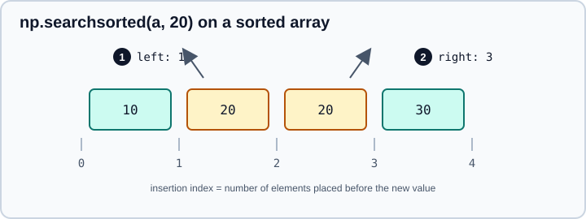

Sorting, Searching & Counting
|
This content was generated with the assistance of AI and should be verified against the official documentation before being relied on in production. |
Ordering data, finding where a value would fit, and counting what is there are three of the most frequent operations in numerical code. NumPy gathers them in the routines documented under "Sorting, searching, and counting": a family of sorts that return values or positions, a binary search, functions that locate non-zero or extreme elements, and counters for integers and bins.
This page targets NumPy 2.5, as checked against the official documentation in October 2026. Examples target
Python 3.13 or 3.14 and were run on Python 3.13. Every code block was run with NumPy 2.5.4 and the printed output is real. Related pages
in this part: NumPy overview, Advanced & Boolean Indexing
(the index arrays that argsort and nonzero produce are used there),
Reductions & Axis Semantics, Statistics & Histograms
and Set Operations.
Sorting values with np.sort
np.sort(a) returns a sorted copy; the method a.sort() sorts in place and returns None. Both sort along the last
axis by default.
import numpy as np
a = np.array([3, 1, 2, 1, 5, 4])
print(np.sort(a))
print(np.sort(a, descending=True))
b = a.copy()
b.sort()
print(b)
m = np.array([[3, 1, 2], [9, 7, 8]])
print(np.sort(m, axis=1)) # each row (the default)
print(np.sort(m, axis=0)) # each column
print(np.sort(m, axis=None)) # flattened first[1 1 2 3 4 5] [5 4 3 2 1 1] [1 1 2 3 4 5] [[1 2 3] [7 8 9]] [[3 1 2] [9 7 8]] [1 2 3 7 8 9]
Source: numpy.sort
The signature has three options that matter:
-
axis: the axis to sort along;axis=Noneflattens first. -
kind:'quicksort'(the default),'mergesort','heapsort'or'stable'. According to the documentation,'stable'and'mergesort'both use timsort or radix sort depending on the dtype, and'mergesort'is kept only for backward compatibility. Despite its name, the default'quicksort'is an introsort, which bounds the worst case. -
stable=(added in NumPy 2.0):stable=Trueselectskind='stable'andstable=FalseorNonemakes no promise. This is the spelling to prefer, because the array API standard uses it. -
descending=(added in NumPy 2.5):descending=Truesorts from largest to smallest.
Before descending= existed, code reversed the result with a slice (np.sort(a)[::-1]), or negated the input
(np.sort(-a)), which fails for unsigned integers and mishandles the smallest signed value. On NumPy 2.5 write
np.sort(a, descending=True) and let the library handle the dtype. On older NumPy releases the reversal slice remains
the portable spelling, so a library that supports NumPy below 2.5 cannot use descending= yet.
NaN and infinity ordering
NaN values are sorted to the end, after inf, and descending=True keeps them at the end instead of moving them
to the front.
x = np.array([2.0, np.nan, 1.0, -np.inf, np.inf])
print(np.sort(x))
print(np.sort(x, descending=True))[-inf 1. 2. inf nan] [ inf 2. 1. -inf nan]
Source: numpy.sort (the Notes section on the ordering of complex numbers, NaN and masked values)
This is the opposite of what a naive "NaN is the smallest value" intuition suggests, and it is also different from
np.argmin and np.argmax, covered below, which treat NaN as the extreme value.
Sorting strings and structured data
Strings sort lexicographically by code point, so uppercase letters come before lowercase ones ('A' before 'a').
Structured arrays (see Structured Arrays) are sorted by field with the
order argument; fields that are not named still break ties, in dtype order. Complex numbers sort by real part and then
imaginary part, and np.sort_complex is the dedicated function for that.
people = np.array(
[("lee", 30), ("kim", 25), ("lee", 22)],
dtype=[("name", "U3"), ("age", "i4")],
)
print(np.sort(people, order=["name", "age"]))
print(np.sort_complex([2 + 1j, 1 + 5j, 1 + 2j]))[('kim', 25) ('lee', 22) ('lee', 30)]
[1.+2.j 1.+5.j 2.+1.j]
Source: numpy.sort and numpy.sort_complex
Sorting positions with argsort
np.argsort(a) returns the indices that would sort a. Positions are more useful than values whenever a second
array has to be reordered the same way (names by score, labels by feature, rows by key). It accepts the same axis,
kind, stable and descending arguments as np.sort.
scores = np.array([70, 90, 70, 85, 90])
names = np.array(["ann", "bob", "cy", "dee", "eve"])
print(np.argsort(scores, stable=True))
print(np.argsort(scores, stable=True, descending=True))
print(names[np.argsort(scores, stable=True, descending=True)])[0 2 3 1 4] [1 4 3 0 2] ['bob' 'eve' 'dee' 'ann' 'cy']
Source: numpy.argsort
The two 90s keep their original order (bob before eve) and so do the two 70s, because the sort is stable. That
matters whenever ties exist: with the default quicksort the order of equal elements is not defined, so a result can
differ between NumPy versions, platforms or array sizes even though each one is a valid sort. Request stable=True
whenever tie order is observable, for example when ranking, when sorting in several passes (sort by the secondary key
first, then by the primary key), or when the output is compared against a stored expected result.
The older idiom for descending order, np.argsort(-scores), is stable only for the ties among negated values, and it is
wrong for unsigned integers and for strings; descending=True replaces it.
Sorting every row or column independently
On a 2-D array, argsort(axis=1) gives, per row, the column order. Apply it with np.take_along_axis, which expects an
index array with the same number of dimensions as the data. Plain fancy indexing M[idx] would index rows instead.
rng = np.random.default_rng(0)
M = rng.integers(0, 10, size=(3, 4))
idx = np.argsort(M, axis=1)
print(M)
print(idx)
print(np.take_along_axis(M, idx, axis=1))[[8 6 5 2] [3 0 0 0] [1 8 6 9]] [[3 2 1 0] [1 2 3 0] [0 2 1 3]] [[2 5 6 8] [0 0 0 3] [1 6 8 9]]
Source: numpy.take_along_axis
With axis=None, argsort works on the flattened array and the indices refer to flat positions; convert them to
coordinates with np.unravel_index.
Sorting by several keys with lexsort
np.lexsort(keys) sorts by several keys and returns indices. The last key in the sequence is the primary key,
which is the reverse of the order in which a person would say "by last name, then first name".
last = np.array(["lee", "kim", "lee", "kim"])
first = np.array(["bo", "zoe", "al", "amy"])
order = np.lexsort((first, last)) # primary key last
print(order, last[order], first[order])[3 1 2 0] ['kim' 'kim' 'lee' 'lee'] ['amy' 'zoe' 'al' 'bo']
Source: numpy.lexsort
lexsort is always stable. For tabular data with named columns, pandas sort_values(by=[...]) is usually clearer; see
the pandas part.
Partial sorting: partition and argpartition
A full sort costs O(n log n). If only the k smallest or largest elements, or a single order statistic such as the
median, are needed, np.partition(a, kth) does less work (the algorithm is introselect, linear on average). It places
the element that would sit at position kth in a fully sorted array in that position, puts everything smaller or equal
before it and everything larger after it, and promises nothing about the order inside each side.
a = np.array([7, 1, 5, 3, 9, 2, 8])
p = np.partition(a, 2)
print(p, p[2]) # p[2] is the 3rd smallest
print(np.partition(a, -3)[-3:]) # the 3 largest, unordered
print(np.sort(np.partition(a, -3)[-3:])[::-1]) # the 3 largest, descending
print(np.argpartition(a, 2)[:3], a[np.argpartition(a, 2)[:3]])
print(np.partition(a, (1, 4))) # several pivots at once[1 2 3 5 9 7 8] 3 [7 9 8] [9 8 7] [1 5 3] [1 2 3] [1 2 3 5 7 9 8]
The output above came from NumPy 2.5.4 on Apple silicon. Only the values at the pivot positions are guaranteed; the order on each side of a pivot depends on the NumPy build and the CPU, so another machine can print the same elements in a different order.
Source: numpy.partition and numpy.argpartition
Typical uses are a top-k selection (partition, then sort only the k winners), and a robust location estimate without a
full sort. kth may be negative and may be a sequence of positions. A stable tie order is not available with
partition, so if ties must be broken deterministically use a full argsort(stable=True) and slice the first k. np.median
and np.percentile use partitioning internally, as described on Statistics & Histograms.
Binary search with searchsorted
np.searchsorted(a, v) finds the index at which each value of v would have to be inserted into the already sorted
array a to keep it sorted. It uses binary search, so it costs O(log n) per value, and it accepts a whole array of
queries at once.
s = np.array([10, 20, 20, 30])
print(np.searchsorted(s, 20)) # side="left" is the default
print(np.searchsorted(s, 20, side="right"))
print(np.searchsorted(s, [5, 25, 99]))1 3 [0 3 4]
Source: numpy.searchsorted

In the figure, marker 1 is the answer for side="left" (the insertion point before the existing 20s) and marker 2 is the
answer for side="right" (after them). The difference between the two is exactly the number of copies of the value,
which makes searchsorted(a, v, "right") - searchsorted(a, v, "left") a counter for sorted data.
Three consequences are worth keeping in mind:
-
The input must be sorted.
searchsorteddoes not check, and unsorted input returns indices that look valid but are meaningless. If the array is not sorted but you do not want to reorder it, pass the permutation fromargsortassorter=. -
It does not test membership. The returned index can point at a value different from the one searched for. To test membership, compare
s[i] == vafter clippingito the length, or usenp.isin(see Set Operations). -
It is the building block of binning. Searching with
side="right"against bin edges and subtracting one gives the interval each value falls in, which is whatnp.digitizebelow packages.
bins = np.array([0, 18, 65]) # [0,18), [18,65), [65,inf)
ages = np.array([3, 18, 40, 70])
print(np.searchsorted(bins, ages, side="right") - 1)
u = np.array([30, 10, 20]) # unsorted: supply the sorter
srt = np.argsort(u)
print(srt[np.searchsorted(u, 20, sorter=srt)]) # position of 20 in u[0 1 1 2] 2
Source: numpy.searchsorted
NaN is treated as larger than every number, consistent with np.sort, so a NaN query is inserted at the end of an
array whose NaNs are last. For sorted string arrays or dates the same function works unchanged.
Finding elements: nonzero, argwhere, where and extract
Several functions return the positions of elements that satisfy a condition.
z = np.array([[0, 3], [4, 0]])
print(np.nonzero(z)) # tuple of index arrays, one per axis
print(np.argwhere(z)) # one row of coordinates per element
print(np.flatnonzero(z)) # indices into the flattened array
print(np.where(z > 0, "pos", "zero")) # three-argument form: choose per element
w = np.array([[1, 5], [7, 2]])
print(np.extract(w > 1, w))(array([0, 1]), array([1, 0])) [[0 1] [1 0]] [1 2] [['zero' 'pos'] ['pos' 'zero']] [5 7 2]
Source: numpy.nonzero and numpy.where
-
np.nonzero(a)returns a tuple with one index array per dimension; it can be used directly as an index (a[np.nonzero(a)]), andnp.nonzero(a > 3)is the idiomatic way to turn a condition into positions. -
np.argwhere(a)returns the same coordinates grouped per element, a(count, ndim)array that is convenient for looping or for later feeding a plot. -
np.flatnonzero(a)isnp.nonzero(np.ravel(a))[0]. -
np.where(cond)with one argument is the same asnp.nonzero(cond); with three arguments it is an element-wise conditional that selects fromxory. Both branches are fully evaluated, so use it for selection, not to avoid an invalid computation such as a division by zero (np.errstateand thewhere=argument of ufuncs are the tools for that; see Floating-Point Errors & errstate). -
np.extract(cond, a)is a flata[cond]; ordinary Boolean indexing is almost always preferable.
Boolean indexing and these functions are compared in Advanced & Boolean Indexing.
Locating extremes: argmax, argmin and the NaN variants
argmax and argmin return the position of the first maximum or minimum. They take axis= and keepdims=. With axis=None the index refers to the flattened array, and np.unravel_index turns it back into
coordinates.
v = np.array([3, 9, 9, 1])
print(np.argmax(v), np.argmin(v), np.argmax(v, keepdims=True))
w = np.array([[1, 5], [7, 2]])
print(np.argmax(w, axis=1))
print(np.unravel_index(np.argmax(w), w.shape))
x = np.array([3.0, np.nan, 1.0])
print(np.argmin(x), np.nanargmin(x))
print(np.argmax([1, np.nan, 3]), np.nanargmax([1, np.nan, 3]))1 3 [1] [1 0] (np.int64(1), np.int64(0)) 1 2 1 2
Source: numpy.argmax and numpy.nanargmax
np.argmax and np.argmin treat NaN as an extreme value: any NaN wins, so an array containing a NaN returns the
position of the first NaN. np.nanargmax and np.nanargmin ignore NaN instead, and raise ValueError ("All-NaN slice
encountered") when a slice contains nothing else. Ties return the first occurrence; to find all of them compare
with the maximum and call np.flatnonzero.
Counting
w = np.array([[1, 5], [7, 2]])
print(np.count_nonzero(w > 1), np.count_nonzero(w > 1, axis=0))
print(np.bincount([0, 1, 1, 3, 1]))
print(np.bincount([0, 1, 1, 2], weights=[0.5, 1, 2, 3], minlength=5))
vals, counts = np.unique(np.array(["a", "b", "a", "c", "a"]), return_counts=True)
print(vals, counts)3 [1 2] [1 3 0 1] [0.5 3. 3. 0. 0. ] ['a' 'b' 'c'] [3 1 1]
Source: numpy.count_nonzero and numpy.bincount
-
np.count_nonzero(a)counts non-zero (orTrue) elements, withaxis=andkeepdims=. For a Boolean condition it is the fastest way to count matches (np.count_nonzero(a > 3)), and(a > 3).sum()gives the same result more slowly. -
np.bincount(x)counts occurrences of each non-negative integer; the result has lengthx.max() + 1, or at leastminlength. Withweights=it sums the weights per value instead, which makes it a very fast group-by-sum over integer codes. Negative values raiseValueError, and floats raiseTypeErrorbecause they cannot be cast safely to integers. -
np.unique(x, return_counts=True)counts any sortable values, at the cost of a sort (or, fornp.unique_valuessince NumPy 2.3, a hash-based pass); see Set Operations.
A cumulative count is np.cumsum(np.bincount(x)), and np.searchsorted(sorted_a, v, "right") - np.searchsorted(sorted_a, v, "left")
counts the copies of v in sorted data without scanning it.
Binning with digitize and histogram
np.digitize(x, bins) returns, for every value, the index of the bin it falls into. The bins must be monotonically
increasing or decreasing. With right=False (the default) bin i is the half-open interval bins[i-1] <= x < bins[i];
with right=True it is bins[i-1] < x <= bins[i]. Values below the first edge get index 0 and values at or above the
last edge get len(bins), so there are len(bins) + 1 possible results.
x = np.array([0.2, 6.4, 3.0, 1.6, 1.0, 4.0, 10.0, -1.0])
bins = [0.0, 1.0, 2.5, 4.0, 10.0]
print(np.digitize(x, bins))
print(np.digitize(x, bins, right=True))[1 4 3 2 2 4 5 0] [1 4 3 2 1 3 4 0]
Source: numpy.digitize
The values that sit exactly on an edge (1.0, 4.0 and 10.0) are the ones that change between the two calls, so decide
the edge convention explicitly whenever data can hit a boundary, such as ages, prices or integer counts. np.digitize
returns the bin of every value; np.histogram returns how many values fall into each bin and always treats the last
bin as closed. Counting per bin is the subject of Statistics & Histograms; pandas offers
pd.cut and pd.qcut for labelled and quantile bins.
Top-k recipes
sc = np.array([5, 9, 9, 1, 9])
k = 2
# deterministic: ties keep their original order
print(np.argsort(sc, stable=True, descending=True)[:k])
# fast for large arrays: partition, then order only the k winners
r = np.random.default_rng(3).normal(size=100_000)
top = np.sort(np.partition(r, -5)[-5:])[::-1]
print(np.allclose(top, np.sort(r)[::-1][:5]))[1 2] True
Source: numpy.partition
The first form is exact and stable but sorts everything; the second does linear work plus a sort of k elements, and
it returns the values only. Use argpartition when positions are needed, accepting that ties at the cut-off are
resolved arbitrarily.
Pitfalls and what changed
-
Stability is opt-in. The default sort does not promise to keep equal elements in order. Pass
stable=True. -
searchsortedon unsorted data silently returns nonsense; sort first or passsorter=. -
Descending sorts. On NumPy 2.5 use
descending=True. Reversing with[::-1]also reverses the order of ties, which breaks stability. -
argsort(axis=1)indices cannot be applied withM[idx]. Usenp.take_along_axis. -
np.lexsorttakes the primary key last. -
NaN sorts last in
sort,argsort,partitionandsearchsorted, but winsargmax/argmin. -
np.partitionis not a sort. Only positionkth(and the split around it) is meaningful. -
bincountneeds small non-negative integers; a single huge value allocates an array of that length. Usenp.unique(..., return_counts=True)for sparse or arbitrary keys. -
Old tutorials use
np.sort(-a)ora[::-1]for descending order and rely on the unspecified tie order of the default sort. Both still run, but onlydescending=True(NumPy 2.5) andstable=True(NumPy 2.0) say what is meant. Thekind='mergesort'spelling is still accepted and means the same as'stable'.
| NumPy release | Change relevant to this page |
|---|---|
2.0 |
|
2.3 |
|
2.5 |
|
See Migrating to NumPy 2.x and What’s New for the full lists.